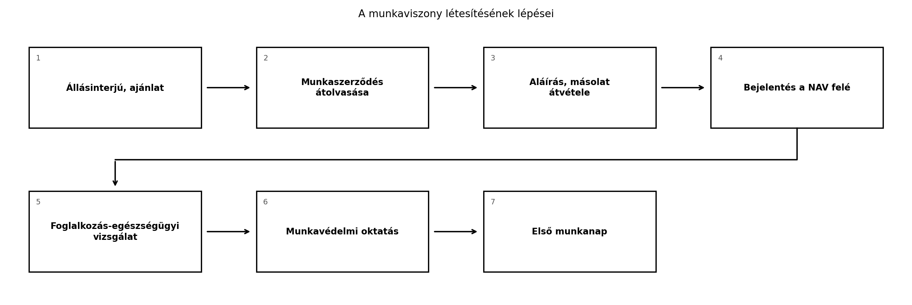

Elkészült a szakácsvizsgád, kezedben a friss bizonyítvány, és jelentkeztél egy étterembe szakácsnak. Az interjú jól sikerült, a séf azt mondja: „Hétfőn kezdhetsz is.” Kapsz egy papírköteget, amelynek a tetején ez áll: munkaszerződés. Most azonnal alá kellene írnod? Vagy előbb el kell olvasnod? Mi történik, ha aláírod anélkül, hogy értenéd? Mi jár neked, és mi a te kötelezettséged? Ebben az alfejezetben ezt tanulod meg. A munkajogi alapismeretek segítenek, hogy védd a saját érdekeidet, és tisztában légy azzal, milyen keretek között dolgozol majd a konyhán, az étteremben vagy egy rendezvényen.
Képzeld el, hogy Bence frissen végzett szakácsként belép egy étterem konyhájára. A munkaszerződése előtt több kérdés is felmerül: kinek dolgozik pontosan, milyen munkakörben, mennyi bérért, hol végzi a munkát, és meddig szól a megállapodás. Az alábbi folyamat mutatja, milyen lépéseken megy keresztül a munkaviszony létrejötte.

A folyamat minden lépése fontos. Ha bármelyik elmarad, abból később félreértés, elmaradt bér vagy akár baleset is lehet.
Definíció. A munkaviszony olyan jogviszony, amelyben a munkavállaló a munkáltató irányítása és utasítása szerint, személyesen, rendszeresen munkát végez, a munkáltató pedig munkabért fizet, valamint biztosítja a munkavégzés feltételeit. A munkaviszony alapja a munkaszerződés.
Definíció. A munkáltató az a jogi vagy természetes személy, aki a munkavállalót munkaszerződés alapján foglalkoztatja, és utasítási joga van a munkavégzéssel kapcsolatban. A vendéglátó üzletben a munkáltató lehet például a vendéglátó vállalkozást működtető gazdasági társaság (például kft.) maga; az ügyvezető a társaság nevében gyakorolja a munkáltatói jogokat. Munkáltató lehet az egyéni vállalkozó is.
Definíció. A munkavállaló az a természetes személy, aki a munkáltató irányítása alatt, személyesen, díjazás ellenében munkát végez. Szakács munkakörben a munkavállaló lehet beosztott szakács, séfhelyettes, konyhai kisegítő, előkészítő, salátás, desszertes vagy mosogató.
Jogszabály. A munkaviszony legfontosabb magyar szabályait a Munka Törvénykönyvéről szóló 2012. évi I. törvény (Mt.) határozza meg. Emellett a munkavédelmi törvény, az adózás rendjéről szóló törvény, a társadalombiztosítási szabályok és az egyenlő bánásmód követelménye is vonatkozik a felekre. A konkrét szabályok és mértékek időben változhatnak, ezért mindig a hatályos jogszabályt és a munkáltatói belső szabályzatokat kell figyelembe venni. (ellenőrizendő: hatályos Mt., adó- és TB-jogszabályok)
A munkaszerződést írásba kell foglalni. Ha a munkáltató ezt elmulasztja, a munkaviszony akkor is létrejön, és a munkavállaló kérheti az írásba foglalást. (ellenőrizendő: hatályos Mt. 44–46. §)
Szabály. Az Mt. 45. §-a szerint a munkaszerződésben a feleknek legalább két dologban kell megállapodniuk: a munkavállaló alapbérében és munkakörében. Ha a szerződés mást nem mond, törvényi vélelem érvényes: a munkavégzés helye a szokásos munkavégzési hely, a munkaviszony határozatlan idejű, a munkaidő pedig az általános teljes munkaidő. (ellenőrizendő: hatályos Mt. 45. §)
A munkáltató emellett az Mt. 46. §-a szerint legkésőbb a munkaviszony kezdetétől számított hét napon belül (egyes adatoknál egy hónapon belül) írásban tájékoztatja a munkavállalót a további lényeges munkafeltételekről. (ellenőrizendő: hatályos Mt. 46. §, a határidők; a korábbi 15 napos szabály módosult) Ilyen például:
Megjegyzés. A munkakör pontos megjelölése a vendéglátásban különösen fontos, mert a szakács munkakör jelenthet hidegkonyhai előkészítést, melegkonyhai főzést, grill- vagy desszertkészítést. Ha a munkakör nincs meghatározva, a munkáltató széleskörűen utasíthat, és ez félreértésekhez vezethet.
Példa. Anna munkaszerződésében a következő sorok szerepelnek: „Munkakör: szakács a melegkonyhán. Munkavégzés helye: a munkáltató 1051 Budapest, Fő utca 12. szám alatti éttermének konyhája. Bruttó munkabér: 450 000 Ft/hó, a tárgyhónapot követő hónap 10. napjáig. Napi munkaidő: 8 óra, beosztás szerinti munkarendben. Határozatlan idejű munkaviszony, kezdete: 2026. augusztus 1. Próbaidő: 3 hónap.” Ez a szerződés tartalmazza a legfontosabb elemeket.
A munkaviszony a munkaszerződés aláírásával jön létre. A munkáltató a munkavállalót a NAV-hoz bejelenti, és az adó- és társadalombiztosítási kötelezettségeket teljesíti. A munkavállaló az első munkanapon munkavédelmi oktatáson vesz részt, és megkapja a munkaköri leírást. A munkaviszony kezdetekor a munkáltató köteles a munkavállalót tájékoztatni a rá vonatkozó szabályokról, a munkarendről, a szabadság nyilvántartásáról és a bérfizetés módjáról.
Jogszabály. A munkáltató a munkaviszonyt a NAV felé a munkaszerződés aláírását követően, előre meghatározott határidőn belül köteles bejelenteni. A bejelentés elmulasztása súlyos szabályszegés, amely a munkavállaló társadalombiztosítási jogait is veszélyezteti. (ellenőrizendő: NAV T1041, bejelentési határidő pontos szabálya)
A munkaszerződés módosításához általában a munkáltató és a munkavállaló közös megegyezése szükséges. A gyakorlatban gyakran módosítják a munkabért, a munkakört vagy a munkavégzés helyét. Ilyenkor a módosítást is írásba kell foglalni, és mindkét félnek alá kell írnia.
Szabály. A munkakörön és a munkavégzési helyen belül maradó beosztásváltoztatás utasítással lehetséges. Például a szakácsot áthelyezhetik a hidegkonyhába, ha a munkaszerződésben a munkakör „szakács” és nem „melegkonyhai szakács”. Ha a munkáltató a szerződéstől eltérő munkakörben vagy helyen foglalkoztatna, ez csak átmenetileg, a törvényi időkorláton belül lehetséges (ellenőrizendő: Mt. 53. §); tartós változáshoz szerződésmódosítás kell.
A munkaviszony megszűnhet: - a határozott idő lejártával, - a munkavállaló halálával, - a munkáltató jogutód nélküli megszűnésével.
A munkaviszonyt a felek meg is szüntethetik: - közös megegyezéssel – bármikor, írásban, a felek megállapodása szerint; - felmondással – a munkáltató vagy a munkavállaló írásbeli nyilatkozatával; - azonnali hatályú felmondással – súlyos szerződésszegés esetén.
Szabály. A rendes felmondás esetén a felmondási idő legalább 30 nap, de a munkáltatói felmondásnál hosszabb is lehet a munkaviszonyban eltöltött idő függvényében. A munkavállaló felmondása esetén a felmondási idő általában 30 nap. A felmondási idő kezdete a közlés napját követő nap. A próbaidő alatt a felek indokolás nélkül, azonnal megszüntethetik a munkaviszonyt. A pontos felmondási szabályok és a végkielégítés feltételei az Mt.-ben találhatók. (ellenőrizendő: felmondási idő, végkielégítés pontos feltételei)
Szabály. Végkielégítés akkor jár a munkavállalónak, ha a munkaviszonya legalább 3 éve fennáll, és a munkáltató rendes felmondással szünteti meg, vagy a munkáltató jogutód nélkül megszűnik (kivéve, ha a törvény szerinti kivétel fennáll). A végkielégítés mértéke a munkaviszony hosszától függ: 3–5 év: 1 havi távolléti díj, 5–10 év: 2 havi, 10–15 év: 3 havi, stb. A pontos sávok és a távolléti díj számítása a hatályos Mt.-ben szerepel. (ellenőrizendő: végkielégítés sávjai)
Példa. Bence 4 éve dolgozik egy étteremben szakácsként. A munkáltató gazdasági okból rendes felmondással megszünteti a munkaviszonyát. Bence jogosult a felmondási időre és a 3–5 éves sáv szerinti végkielégítésre: ez jelenleg 1 havi távolléti díj (ellenőrizendő). A munkáltatónak a végkielégítést és a többi járandóságot legkésőbb a munkaviszony megszűnésétől számított ötödik munkanapon kell kifizetnie (ellenőrizendő: Mt. 80. §).
A konyhai munkarend gyakran eltér a megszokott hétfőtől péntekig tartó munkarendtől. A szakács hétvégén, ünnepnapokon és este is dolgozhat, különösen rendezvények idején. Ezért fontos ismerni a pihenőidő és a szabadság szabályait.
Szabály. A munkaközi szünet: ha a napi munkaidő meghaladja a 6 órát, legalább 20 perc szünetet kell biztosítani; ha a 9 órát, további 25 percet, vagyis összesen 45 percet. Például napi 10 óra munka mellett összesen legalább 45 perc munkaközi szünet jár. A szünet nem része a munkaidőnek. A pontos értékek az Mt.-ben találhatók, és kollektív szerződés eltérően is rendelkezhet. (ellenőrizendő: szünetek pontos időtartama)
Szabály. A napi pihenőidő a munka befejezése és a másnapi munkakezdés között legalább 11 óra. Ezért ha este 23 órakor fejezed be, másnap legkorábban 10 órakor kezdhetsz. Hetente két pihenőnap jár; egyenlőtlen munkaidő-beosztásnál vagy munkaidőkeretben ettől el lehet térni, de hetente legalább egy pihenőnapot (vagy a törvényben meghatározott módon pihenőidőt) biztosítani kell. (ellenőrizendő: pihenőidők pontos szabálya)
Szabály. A szabadság alapmértéke évi 20 munkanap. Ehhez jönnek a pótszabadságok: - életkor szerint: 25. életévtől 1 nap, 28. életévtől 2 nap, 31. életévtől 3 nap, stb., felfelé fokozatosan nő; - gyermekek után: egy gyermek után 2 nap, két gyermek után 4 nap, három gyermek után 7 nap pótszabadság; - fiatal munkavállaló (18 év alatt) évi 5 nap pótszabadságot kap; - egészségkárosodott munkavállaló további pótszabadságra jogosult.
A szabadságot pénzben megváltani csak a munkaviszony megszűnésekor lehet; a fennmaradt szabadságot a munkáltató kifizeti. (ellenőrizendő: pótszabadság pontos napjai, gyermekek utáni mértékek)
Számítás. Egy 30 éves, két gyermekes szakács éves szabadsága: - alapszabadság: 20 nap; - életkori pótszabadság: 30 évesen 2 nap (28–31 év között, ellenőrizendő); - gyermekek utáni pótszabadság: 2 gyermek után 4 nap (ellenőrizendő); Összesen: 20 + 2 + 4 = 26 munkanap szabadság évente.
A vendéglátásban nem mindenki dolgozik hagyományos, határozatlan idejű munkaviszonyban. A munkavállalónak és a munkáltatónak is érdemes ismernie a leggyakoribb foglalkoztatási formákat, mert az adózás, a társadalombiztosítás és a jogok messze nem azonosak.
| Foglalkoztatási forma | Jellemzője | Példa a vendéglátásban |
|---|---|---|
| Munkaviszony | Teljes körű munkajogi védelem, Mt. szabályai. | Beosztott szakács, séfhelyettes, konyhafőnök (séf). |
| Határozott idejű munkaviszony | Előre meghatározott időre szól. | Szezonális étterem szakácsa, wellness hétvégékre. |
| Egyszerűsített foglalkoztatás (EFO) | Alkalmi munka, idénymunka; egyszerűsített adózás. | Nyári idénymunka, szüreti főző, alkalmi eseményre felvett kisegítő. |
| Diákmunka (iskolaszövetkezet) | Nappali tagozatos diák, szövetkezeten keresztül. | Tanuló konyhai kisegítő, előkészítő, felszolgáló gyakornok. |
| Megbízási jogviszony | Polgári jogi szerződés, eredmény- vagy tevékenységköteles. | Esküvői menü tervezése, catering konzultáció. |
| Egyéni vállalkozó | Vállalkozói jogviszony, saját kockázat. | A szakács saját catering vállalkozást alapít. |
Jogszabály. Az egyszerűsített foglalkoztatás (EFO) alkalmi munka esetén legfeljebb évi bizonyos napig, idénymunka esetén az adott időszakra szól, és a közterhek egyszerűsítve fizetendők. Az EFO-ban foglalkoztatott személy nem szerez társadalombiztosítási jogosultságot a normál munkaviszonyhoz hasonló mértékben, de adózás szempontjából kedvező lehet a munkáltatónak és a munkavállalónak is. A pontos mértékeket és feltételeket a mindenkori adójogszabályok határozzák meg. (ellenőrizendő: EFO-rendelet, alkalmi munkás napok, közteher-mértékek)
Szabály. A diákmunka lényege, hogy nappali tagozatos hallgatók iskolaszövetkezeten keresztül dolgoznak. A diák az iskolaszövetkezet tagja, és a szövetkezettel áll tagi munkavégzési jogviszonyban; a szövetkezet a vendéglátónak szolgáltatást nyújt, amelynek keretében a diák ott dolgozik (ez nem munkaerő-kölcsönzés; ellenőrizendő: Mt. 222–228. §, szövetkezeti törvény). Az adózás kedvezményes, és a 25 év alatti fiatalok jövedelme egy értékhatárig SZJA-mentes, ezért a 25 év alatti diák jellemzően nem fizet személyi jövedelemadót. A pontos szabályok évről évre változhatnak. (ellenőrizendő: diákmunkára vonatkozó adózási szabályok, járulékok, a 25 év alattiak SZJA-mentességének értékhatára)
Figyelem. A fekete foglalkoztatás (bejelentés nélküli munka) tilos. Ha a munkavállaló bejelentés nélkül dolgozik, nem szerez jogot táppénzre, nyugdíjra, egészségügyi ellátásra, és a bérét is nehezebb behajtani. A munkáltató súlyos bírságot kockáztat.
Munkavállalói jogok: - a munkabér időben történő kifizetéséhez való jog; - a biztonságos és egészséges munkafeltételekhez való jog (ezeket a Munkavédelmi jogok és kötelezettségek, munkabaleset alfejezet részletezi); - a szabadsághoz és a pihenőidőhöz való jog; - a jogszabályban meghatározott pótlékokhoz való jog (pl. éjszakai, hétvégi, ünnepnapi munka); - az egyenlő bánásmódhoz való jog; - a munkaidő nyilvántartásban való pontos szerepeltetéshez való jog.
Munkavállalói kötelezettségek: - a munkaköri feladatok személyes, gondos elvégzése; - a munkáltató jogszerű utasításainak végrehajtása; - a munkavédelmi és higiéniai szabályok betartása (pl. kézmosás, védőruha, balesetvédelmi előírások); - a munkatársakkal való együttműködés; - a munkáltató üzleti titkainak megőrzése (pl. vendégadatok, receptúra); - a munkaidő pontos betartása, a késés és indokolatlan hiányzás elkerülése; - a munkáltató eszközeinek, nyersanyagainak rendeltetésszerű használata.
Felelősség. A munkavállaló anyagi felelősséggel tartozik a munkáltatónak a munkaviszonyával összefüggésben okozott kárért. Szándékos károkozás esetén a teljes kárt meg kell térítenie, gondatlan károkozás esetén a kár egy korlátozott mértékéig felel. Az étteremben például ha a szakács szándékosan tönkretesz egy drága robotgépet, teljes kártérítést fizethet; ha figyelmetlenségből elejt egy tányérköteget, a kártérítés mértéke gondatlan károkozásnál az Mt. szerint legfeljebb a munkavállaló négyhavi távolléti díja (kollektív szerződés ennél magasabb, de legfeljebb nyolchavi összeget is megállapíthat); a kártérítést nem lehet egyszerűen „levonni” a bérből, ahhoz külön szabályok vannak. A pontos szabályok az Mt.-ben és a munkáltatói belső szabályzatban találhatók. (ellenőrizendő: Mt. 179. §, kártérítés összeghatára)
A munkáltató a munkaviszony létesítéséhez a következő adatokat és iratokat kérheti, amelyeket a munkavállalónak be kell mutatnia:
Figyelem. A munkáltató köteles a munkavállalót foglalkozás-egészségügyi orvosi vizsgálatra elküldeni, mielőtt a munkakört betölti. A vizsgálat díja a munkáltatót terheli. A vendéglátó konyhán dolgozóknak a vizsgálat döntő fontosságú, mert fertőző betegséggel nem dolgozhatnak élelmiszerrel.
A munkáltató a munkabérből levonja a munkavállaló közterheit, és befizeti az államnak. A levonások jellemzően: - személyi jövedelemadó-előleg (SZJA) – jelenleg 15% (ellenőrizendő: aktuális kulcs); - társadalombiztosítási járulék – jelenleg 18,5% (ellenőrizendő), amely magában foglalja a nyugdíjjárulékot, az egészségbiztosítási és munkaerő-piaci járulékot.
Emellett a munkáltatót terheli a szociális hozzájárulási adó (szocho), jelenleg 13% (ellenőrizendő), valamint egyéb közterhek. A tényleges levonások mértéke függ a családi kedvezménytől, az első házasok kedvezményétől, a személyi kedvezménytől és egyéb adóalap-csökkentő tényezőktől.
Összefüggés. A nettó bér kiszámítása: A levonások mértéke a bruttó bér százalékában érhető el, de a családi adókedvezmény csökkentheti az SZJA-t.
Számítás. Bence bruttó bére 450 000 Ft/hó. Tegyük fel, hogy a levonások összesen 33,5% (15% SZJA + 18,5% TB, ellenőrizendő). Ekkor a levonások összege: A nettó bér: Ez tanulási adat, a tényleges nettó bér a családi kedvezmények és a mindenkori kulcsok szerint eltérhet; a 25 év alatti munkavállalóknál a jövedelem egy értékhatárig SZJA-mentes, így náluk a nettó bér ennél magasabb (ellenőrizendő: 25 év alattiak SZJA-mentessége). (ellenőrizendő: adó- és járulékkulcsok, családi kedvezmény szabályai)
A munkaviszonyban álló személy társadalombiztosítási jogviszonyt szerez, így jogosulttá válik az egészségbiztosítási ellátásokra: - egészségügyi szolgáltatásra (háziorvos, kórház); - betegszabadságra (az Mt. szerint naptári évenként 15 munkanap jár, amelyre a munkáltató a távolléti díj 70%-át fizeti); - táppénzre (a betegszabadság lejárta után az egészségbiztosító fizeti, feltételek szerint); - baleseti táppénzre; - anyasági ellátásokra (CSED, GYED); - nyugellátásra való jogosultságot is szerez.
Jogszabály. A betegszabadságot a Munka Törvénykönyve szabályozza: naptári évenként 15 munkanap jár, mértéke a távolléti díj 70%-a (nem egy-egy betegség első 15 napja). A táppénz feltételeit, mértékét az egészségbiztosítás ellátásairól szóló törvény határozza meg. A táppénz a megelőző időszak jövedelme alapján számítódik. A pontos szabályokat ellenőrizni kell a hatályos jogszabályokban. (ellenőrizendő: Mt. betegszabadság napjai, Ebtv. táppénz mértéke)
Mielőtt aláírod a munkaszerződést, menj végig az alábbi ellenőrzőlistán. Ezt a listát a Álláskeresés, önéletrajz, interjú és munkanélküliség alfejezetben is használjuk majd, amikor állásajánlatot értékelsz.
Ellenőrzőlista.
Biztonsági korlát. A munkaszerződést mindig olvasd el aláírás előtt. Ha nem értesz valamit, kérdezz, vagy kérd szakember segítségét. Soha ne írj alá félreérthető, hiányos vagy fenyegetés hatására kényszerített szerződést.
A munkaszerződés „minősége” azt jelenti, hogy a dokumentum pontosan tükrözi a felek megállapodását, és megfelel a jogszabályi követelményeknek. Ellenőrizd: - a munkáltató által bejelentett adatok pontosságát (a NAV-hoz benyújtott adatok egyeznek-e a szerződéssel); - a bérpapír (jövedelemigazolás) megfelel-e a szerződésben rögzített bruttó bérnek; - a munkaidő-nyilvántartásban a ténylegesen ledolgozott órák szerepelnek-e; - a szabadság nyilvántartása naprakész-e; - a pótlékok (éjszakai, hétvégi, ünnepnapi) megjelennek-e a bérpapíron.
Példa. Ha Anna bérpapírján a bruttó bér 420 000 Ft, de a munkaszerződésben 450 000 Ft szerepel, az eltérést azonnal jelezni kell a munkáltatónak. A hiba lehet adminisztratív, de lehet szándékos is.
Aláírás olvasás nélkül. A munkavállaló izgatottan aláírja a munkaszerződést, anélkül hogy elolvasná. Később kiderül, hogy a munkakör nem az, amit megbeszéltek, vagy a bér alacsonyabb. Ok: sietség, bizalom a munkáltatóban, félelem az állás elvesztésétől. Helyes gyakorlat: mindig olvass el minden pontot, és kérj időt.
A másolat hiánya. A munkavállaló aláírja a szerződést, de nem kap másolatot. Később nem tudja bizonyítani a munkafeltételeket. Ok: a munkáltató nem ad másolatot, vagy a munkavállaló nem kéri. Helyes gyakorlat: az aláíráskor kérj saját példányt, és őrizd meg.
Fekete foglalkoztatás (bejelentés nélkül). A munkáltató azt mondja: „Nem kell bejelenteni, majd fizetek készpénzben.” A munkavállaló elfogadja. Ok: a munkavállaló nem ismeri a következményeket, vagy azonnali pénzt akar. Helyes gyakorlat: ragaszkodj a bejelentéshez, mert csak így szerzel TB-jogosultságot és védelmet.
Nem ellenőrzött bérpapír. A munkavállaló nem nézi meg a bérpapírját, így nem veszi észre, ha kevesebb bért kap vagy hibás a levonás. Ok: nem tudja, mit kell ellenőrizni. Helyes gyakorlat: hasonlítsd össze a bruttó bért, a levonásokat és a nettót a szerződésben foglaltakkal.
Szabadság ki nem adása. A munkáltató év végén azt mondja: „Idén már nem tudod kivenni a szabadságot, majd jövőre.” Ok: a munkáltató nem tervezi meg a szabadságokat. Helyes gyakorlat: figyeld a szabadságodat, és időben jelezd a kiadási igényt.
Bence frissen végzett szakácsként egy balatoni étteremben kapott szezonális munkát. A munkáltató szóban megállapodott vele: havi bruttó 400 000 Ft, napi 10 óra, heti 6 nap. Bence aláírt egy papírt, de nem kapott másolatot, és nem kérte a bejelentés igazolását. Az első hónapban a konyhafőnök dicsérte, de fizetéskor csak 350 000 Ft-ot kapott, és közölte: „Ez az első hónap, még próbaidő.” Bence nem mert szólni, mert nem volt bizonyítéka a megállapodásra. A szezon végén a munkáltató minden elszámolás nélkül elküldte. Bence nem tudta igazolni a ledolgozott óráit, a bérét sem tudta behajtani, és táppénzre sem volt jogosult, mert be sem jelentették.
Tanulság. A munkaszerződés és a bejelentés igazolása nem formalitás. Minden munkaviszony előtt kérd a szerződés írásba adását, a másolatot, és ellenőrizd a NAV-bejelentést. Ha a munkáltató ezt elmulasztja, az nem a te hibád, de te is kockázatot vállalsz. A napi 10 órás, heti 6 napos (heti 60 órás) munkavégzés ráadásul túllépi a törvényes munkaidő-korlátot (ellenőrizendő: Mt. 99. §); az ilyen ajánlatot írásban sem szabad elfogadni túlóra-elszámolás és pihenőidő nélkül.
Sorold fel a munkaszerződés legalább öt elemét, és jelöld meg közülük azt a kettőt, amelyben az Mt. 45. §-a szerint a feleknek mindenképpen meg kell állapodniuk.
Igaz vagy hamis? Indokold egy mondatban. - a) A munkavállaló a munkáltató utasításait mindig köteles követni, ha azok jogszerűek. - b) A szabadságot év közben csak akkor lehet kivenni, ha a munkáltató engedélyezi, és aki nem kéri, elveszti.
Anna munkaszerződése a következőket tartalmazza: „Munkakör: szakács. Munkavégzés helye: 1051 Budapest, Fő utca 12. Bruttó munkabér: 430 000 Ft/hó. Munkaidő: beosztás szerint. Munkaviszony kezdete: 2026. június 1.” Érvényes-e a szerződés? Mi hiányzik belőle, és mi pótolja a hiányzó elemeket?
Számítsd ki egy 34 éves, egy gyermekes szakács éves szabadságát az alábbi feltételekkel (tanulási adatok): alapszabadság 20 nap; életkori pótszabadság 34 évesen 4 nap; gyermek után 2 nap. Mennyi a teljes éves szabadság?
Készíts ellenőrzőlistát a munkaszerződés aláírása előtti teendőkről. Legalább hatszempontos listát adj, és mindegyikhez írd le, miért fontos az adott pont ellenőrzése.
Egy étterem nyári szezonra határozott idejű, 3 hónapos állást hirdet konyhai kisegítőnek. Hasonlítsd össze a határozott idejű munkaviszonyt az egyszerűsített foglalkoztatással (EFO) ugyanerre a munkakörre. Melyiket választanád, és miért? Írd le a fő különbségeket a munkavállaló jogai, a társadalombiztosítás és a megszüntetés szempontjából, és vedd figyelembe az EFO időkorlátait is.
A munkaszerződés elemei közül öt: 1. munkáltató neve, címe; 2. munkavállaló neve, adatai; 3. munkakör; 4. munkabér (alapbér); 5. munkavégzés helye.
Az Mt. 45. §-a szerint a munkakörben és az alapbérben kell mindenképpen megállapodni; a többi elemről a törvényi vélelmek és a 46. § szerinti tájékoztatás rendelkezik. (ellenőrizendő: Mt. 45–46. §)
Igaz. A munkavállaló köteles a munkáltató jogszerű utasításait végrehajtani, hiszen a munkaviszony lényege a függő, irányított munkavégzés.
Hamis. A szabadságot a munkáltató adja ki, de a munkavállaló kérésére, és nem lehet teljes egészében elveszni; a munkáltató köteles a szabadságot kiadni, és a fennmaradt napokat legkésőbb a munkaviszony megszűnésekor kifizetni.
Az Mt. 45. §-a szerint a munkaszerződés érvényességéhez az alapbér és a munkakör kell; ezek szerepelnek (munkakör: szakács, bér: 430 000 Ft/hó). A munkavégzés helye is szerepel. Ami nincs megadva, azt a törvényi vélelem pótolja: a munkaviszony határozatlan idejű, a munkaidő általános teljes munkaidő. Tehát a szerződés a megadott elemekkel érvényes, kötelező tartalmi elem nem hiányzik. A munkáltató a további lényeges feltételeket (a munkaidő mértéke és beosztása, a bérfizetés napja, a szabadság és a felmondási idő szabályai) az Mt. 46. §-a szerinti írásbeli tájékoztatásban köteles közölni; a felek azonosító adatai (a munkáltató neve, címe, adószáma, a munkavállaló neve) a szerződés fejlécébe tartoznak, hiszen a feladat szövege csak a szerződés tartalmi sorait idézte. (ellenőrizendő: hatályos Mt. 45–46. §)
Alapszabadság: 20 nap. Életkori pótszabadság: 34 évesen 4 nap. Gyermek után: 1 gyermek után 2 nap. Összesen: munkanap.
Ellenőrzőlista a munkaszerződés aláírása előtt:
Határozott idejű munkaviszony és egyszerűsített foglalkoztatás (EFO) összehasonlítása 3 hónapos nyári konyhai kisegítő esetén:
| Szempont | Határozott idejű munkaviszony | EFO (idénymunka) |
|---|---|---|
| Jogviszony | Mt. szerinti munkaviszony, teljes munkajogi védelemmel | Egyszerűsített foglalkoztatás, korlátozottabb védelemmel; csak az időkorlátokon belül (alkalmi munka napi, havi és éves korlát; turisztikai idénymunka éves felső határ) használható, ezért 3 hónapra csak akkor, ha ezek teljesülnek (ellenőrizendő: EFO-törvény korlátai) |
| Társadalombiztosítás | Teljes TB-jogosultság, nyugdíj- és egészségbiztosítási ellátások | Korlátozott, az EFO szabályai szerint (pl. baleseti ellátás) |
| Megszűnés | A határozott idő lejártával megszűnik; a munkavállaló rendes felmondással nem, a munkáltató csak szűk okból szüntetheti meg idő előtt (ellenőrizendő: Mt. 66–67. §). Végkielégítés 3 év alatt nem jár. | A felek könnyen megszüntethetik, a szabályok egyszerűbbek |
| Adózás | Normál SZJA és járulékok | EFO szerinti átalányadó, kedvezőbb közteher |
| Munkavállalói jogok | Szabadság, pótlékok, munkavédelem teljes körben | Alapvető védelem, de a juttatások korlátozottak |
Melyiket választanám? Ha biztos, jogszerű foglalkoztatást szeretnék, és a munka rendszeres, a határozott idejű munkaviszony előnyösebb, mert teljes TB-jogosultságot és munkajogi védelmet ad. Ha csak alkalmi, pár hetes bevételszerzésről van szó, és a munkáltató EFO-t ajánl, az egyszerűbb, de nem biztosít teljes ellátást. Mindig mérlegelni kell a kockázatokat és a hosszú távú érdekeket.
A munkaviszony a munkavállaló és a munkáltató közötti, munkaszerződésen alapuló jogviszony, amelyben a munkavállaló irányítás mellett, személyesen, bérért dolgozik. A munkaszerződést írásba kell foglalni; kötelező tartalma az alapbér és a munkakör; a többi lényeges feltételről (munkavégzés helye, munkaidő, bérfizetés napja, kezdő nap stb.) a munkáltató írásban tájékoztat, hiányukban törvényi vélelmek érvényesek. A munkaviszony létrejöhet határozott vagy határozatlan időre, és speciális formák is léteznek, mint az egyszerűsített foglalkoztatás, a diákmunka és a megbízási jogviszony. A munkavállalót megilleti a munkabér, a pihenőidő, a szabadság, a biztonságos munkafeltételek; ő pedig köteles a feladatait gondosan ellátni és az utasításokat betartani. A munkáltató a bruttó bérből levonja az SZJA-t és a TB-járulékot, a maradék a nettó bér. A munkaviszony megszűnhet közös megegyezéssel, felmondással, azonnali hatályú felmondással vagy a határozott idő lejártával. Továbbvitt eredmény. A munkaszerződés aláírása előtt használd az ellenőrzőlistát: felek adatai, munkakör, munkavégzés helye, bruttó bér, munkaidő, kezdő nap, próbaidő, másolat és bejelentés. Ezt a listát alkalmazzuk az Álláskeresés, önéletrajz, interjú és munkanélküliség alfejezetben, amikor állásajánlatot értékelünk.